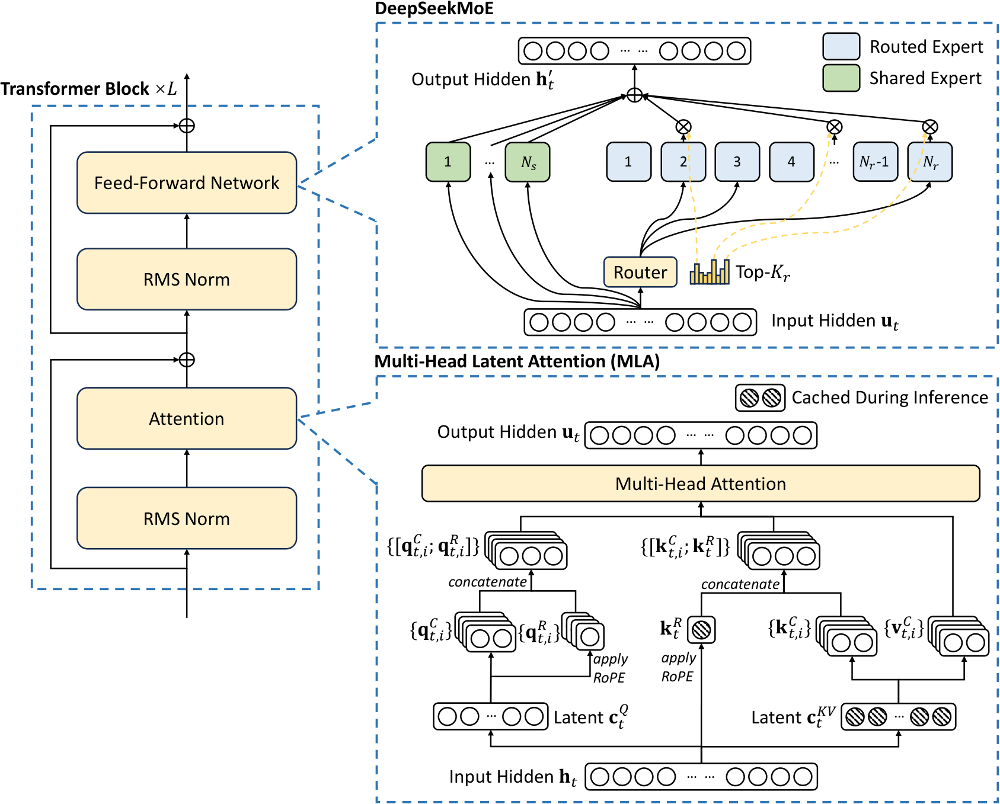
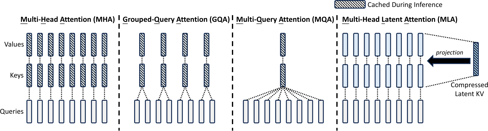
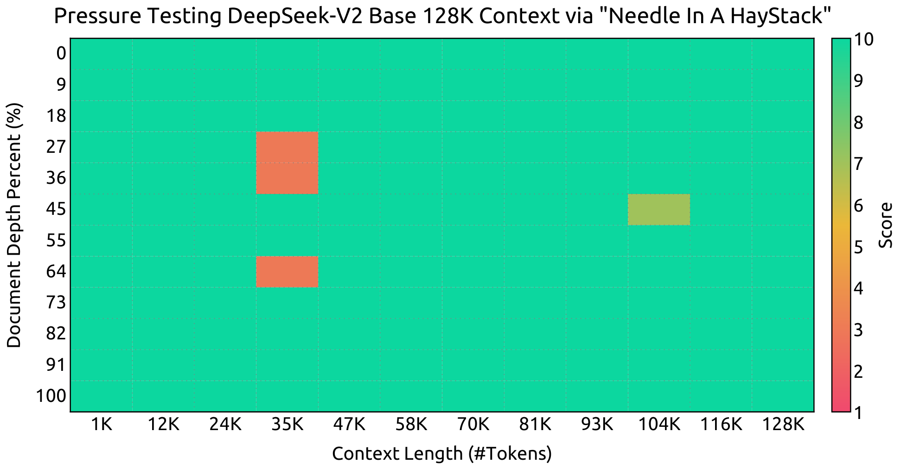

DeepSeek-V2：用 MLA 与细粒度 MoE 降低大模型训练和推理成本¶
将每层历史 K/V 联合压成低维 latent，并把位置编码独立出来；再结合共享／路由专家、受设备约束的路由与系统优化，扩大模型容量而控制计算和缓存。
更大的模型不仅训练昂贵，在线生成还受 KV cache 占用和反复读取历史状态限制。DeepSeek-V2 分别改造 attention 与 FFN：MLA 用低秩联合压缩保留各 head 的表达能力，解耦 RoPE 使历史 KV 无需完整展开；DeepSeekMoE 以共享与细粒度路由专家增加总容量，再控制专家跨设备通信。
最终模型共 236B 参数，每 token 激活 21B，在 8.1T 中英为主的数据上训练，扩展到 128K 上下文，再通过 SFT 与两阶段 GRPO 对齐。相较 DeepSeek 67B，论文报告单位 token 训练成本下降 42.5%、KV cache 降低 93.3%，部署生成吞吐最高达到 5.76 倍。效率来自架构和部署优化共同作用；本文同时保留 attention 消融、质量结果及偏好对齐的能力取舍。
背景与整体架构¶
前作 DeepSeek LLM 采用稠密 Transformer，DeepSeekMoE 已验证细粒度专家与共享专家能提高参数效率。V2 沿用后一条路线，并把注意力的 KV cache 作为新的核心瓶颈。
常规 MHA 为每个 head 保存历史 K 与 V，缓存随层数、序列长度、batch 和 head 数线性增长。MQA／GQA 通过共享 K/V 降低缓存，但作者在同规模对照中观察到部分困难任务下降。因此，V2 目标是以更低缓存保持足够的多头表达能力。

每层仍由 attention 和 FFN 组成：MLA 负责上下文信息聚合，MoE 负责条件计算。RMSNorm、SwiGLU 等基础组件总体延续 DeepSeek 67B。第一层保留稠密 FFN，其余层使用 MoE。
MLA：缓存低维状态，而非每个 head 的完整 K/V¶
标准 MHA 的缓存开销¶
设隐藏维度为 \(d\)，有 \(n_h\) 个 head，每头维度 \(d_h\)。输入 \(h_t\) 经过 \(W^Q,W^K,W^V\) 得到各头 query、key、value，以：
聚合历史，再经输出投影合并。为避免每一步重算所有历史投影，推理需保存全部历史 K/V。若有 \(L\) 层，每个 token 的缓存为 \(2n_hd_hL\) 个元素。
联合低秩压缩 K 与 V¶
MLA 先将 \(h_t\) 下投影到共享 latent：
\(c_t^{KV}\in\mathbb R^{d_c}\)，其中 \(d_c\ll n_hd_h\)；\(W^{DKV}\) 的形状为 \(d_c\times d\)，上投影矩阵将 latent 恢复到多个 head 所需的内容 K/V。K 与 V 从同一 latent 派生，因此可只缓存 \(c_t^{KV}\)，无需分别存完整向量。

图中不同方法减少缓存的方式不同：GQA／MQA 减少独立 K/V 头数，MLA 压缩所有 head 共同依赖的底层状态。每个 query head 仍可通过自己的变换读取 latent 中的信息。
矩阵吸收：避免每一步把历史 K/V 展开¶
对内容分数，利用矩阵乘法的结合律：
于是可以先变换当前 query，直接和缓存 latent 点积。Value 的线性上投影也可吸收到最终输出投影中，避免对所有历史 token 重新展开 \(v_j^C\)。这里改变的是同一线性计算的执行组织，保留了每个 head 对共享 latent 的不同读取方式。
Query 侧也采用 \(c_t^Q=W^{DQ}h_t\)、\(q_t^C=W^{UQ}c_t^Q\) 的低秩结构，以减少训练激活内存；query 不属于历史 KV cache，因此这部分压缩的目的不同。
为什么 RoPE 必须解耦¶
如果直接对内容 K 应用 RoPE，位置旋转矩阵会夹在 query 投影与 K 上投影之间。旋转依赖当前／历史位置，矩阵通常不能交换，因此无法按前述方式吸收，推理又需要反复恢复历史 keys。
V2 将位置项拆出：
内容部分仍可在 latent 中计算，位置部分通过低维 RoPE key 单独计算。所有 head 共享同一个 \(k_j^R\)，但每个 head 有自己的位置 query。最终分数为：
因此每个历史 token 只缓存 \(c_j^{KV}\) 与 \(k_j^R\)，总量为 \((d_c+d_h^R)L\)。
最终维度与缓存比较¶
V2 为 60 层、hidden 5120、128 heads，内容 head 维度 128；\(d_c=512\)、query latent 1536，位置维度 \(d_h^R=64\)。每层缓存 512+64=576 个元素，而相同 head 组织的 MHA 为 \(2\times128\times128=32768\)。
| Attention | 每 token、全模型 KV 元素数 |
|---|---|
| MHA | \(2n_hd_hL\) |
| GQA（\(n_g\) 组） | \(2n_gd_hL\) |
| MQA | \(2d_hL\) |
| MLA | \((d_c+d_h^R)L\) |
原文将此 MLA 缓存量类比为约 2.25 组 GQA。相较实际前代 67B 的缓存减少比例，还涉及不同层数、GQA 配置等，故不能把上面同结构 MHA 的比例直接当作跨代部署数据。
DeepSeekMoE：容量、路由与通信一起设计¶
共享与路由专家¶
除首层外，每层有 2 个共享专家、160 个路由专家，每 token 选 6 个路由专家；每个专家中间维度 1536。输出由残差、共享 FFN 输出，以及稀疏加权的路由专家输出组成：
路由分数来自输入与专家向量的 softmax 亲和度，仅 top-\(K_r\) 的 \(g_{i,t}\) 非零。共享专家处理通用知识，细粒度专家使条件组合更灵活。全模型总参数 236B、每 token 激活 21B。
Device-limited routing¶
若 6 个专家分散在多个设备，每个 token 就产生多路分发。V2 先选择包含高亲和专家的最多 \(M\) 个设备，再在这些设备上做 top-\(K\)。实验发现 \(M\ge3\) 时，质量大致接近无设备限制路由；最终采用 8 路专家并行、每 token 最多去 3 个设备。
这种限制先控制“一个 token 要发到多少地方”，后续均衡项则处理“哪些地方接收过多”。
三种均衡损失¶
专家级损失抑制少数专家长期占用全部训练；设备级损失平衡设备上的专家计算；通信级损失平衡每个设备接收的 token。
以专家级为例：
设备级将专家集合按设备聚合，通信级则使用“token 是否发往该设备”的次数，避免某设备虽然专家计算近似均衡、却接收了过多不同 token。最终系数分别为 0.003／0.05／0.02。
设备级 token dropping¶
辅助损失不能保证每个 batch 严格均衡。训练进一步以平均设备计算为预算（capacity factor=1.0），在超载设备上优先丢弃亲和分数最低的路由 token；约 10% 训练序列不允许丢弃，让模型接触完整路由。评测时不丢 token。
预训练、长上下文与系统实现¶
8.1T 数据与训练设置¶
数据沿用去重、过滤、重混合框架，改进清洗以找回误删的有用文本，增加中文与高质量来源。分词为 100K BBPE；共 8.1T token，中文 token 比英文约多 12%。
| 配置 | DeepSeek-V2 |
|---|---|
| 层数／隐藏维度 | 60／5120 |
| 总参数／激活参数 | 236B／21B |
| 预训练上下文 | 4K |
| 峰值学习率 | \(2.4\times10^{-4}\) |
| Warm-up | 2K 步 |
| Batch 调度 | 前 225B token 中由 2304 条增至 9216 条，随后固定 |
| 学习率下降点 | 约 60%／90% token，各乘 0.316 |
| AdamW | \(\beta_1=0.9,\beta_2=0.95\)，weight decay 0.1 |
| 专家并行与路由 | 8 设备，每 token 最多 3 设备 |
低秩瓶颈后增加 RMSNorm，并对 latent 与路由专家中间表示施加缩放，以控制输出尺度。训练使用 16 路 zero-bubble pipeline、8 路专家并行、ZeRO-1；通过部分重计算控制激活内存，从而不用张量并行，减少通信。共享专家计算与 expert all-to-all 重叠，MLA 内核基于改造的 FlashAttention-2。
YaRN 扩展到 128K¶
YaRN 只作用于携带位置的解耦共享 key。配置为 \(s=40,\alpha=1,\beta=32\)、目标最大长度 160K；调整 attention 熵相关缩放为 \(\sqrt t=0.0707\ln s+1\)。再以 32K 长度、576 条 batch 训练 1,000 步。

横轴表示上下文长度，纵轴表示待找信息在文本中的位置。模型虽然扩展训练长度为 32K，在该合成检索任务中仍能处理至 128K 的不同位置；它提供的是长程定位能力证据。
Base 结果与效率¶
同一评测框架的质量比较¶
作者用统一内部框架比较 DeepSeek 67B、Qwen1.5 72B、Mixtral 8×22B、LLaMA3 70B 和 V2。选择题通常以 perplexity 作答，生成任务按答案抽取／执行评分，Pile 用 BPB。下表选取主表中覆盖不同能力的代表任务：
| 任务 | DeepSeek 67B | Qwen1.5 72B | Mixtral 8×22B | LLaMA3 70B | V2 |
|---|---|---|---|---|---|
| 激活参数 | 67B | 72B | 39B | 70B | 21B |
| MMLU，5-shot | 71.3 | 77.2 | 77.6 | 78.9 | 78.5 |
| BBH，3-shot | 68.7 | 59.9 | 78.9 | 81.0 | 78.9 |
| Pile，BPB ↓ | 0.642 | 0.637 | 0.623 | 0.602 | 0.606 |
| HumanEval | 45.1 | 43.9 | 53.1 | 48.2 | 48.8 |
| MBPP，3-shot | 57.4 | 53.6 | 64.2 | 68.6 | 66.6 |
| GSM8K，8-shot | 63.4 | 77.9 | 80.3 | 83.0 | 79.2 |
| MATH，4-shot | 18.7 | 41.4 | 42.5 | 42.2 | 43.6 |
| CMath，3-shot | 63.0 | 77.8 | 72.3 | 73.9 | 78.7 |
| C-Eval，5-shot | 66.1 | 83.7 | 59.6 | 67.5 | 81.7 |
| CMMLU，5-shot | 70.8 | 84.3 | 60.0 | 69.3 | 84.0 |
V2 在较少激活参数下进入当时开源模型第一梯队。其中文能力明显强于非中文专门训练的 Mixtral／LLaMA3，英语基础任务中仍有落后项。原表还保留 HellaSwag、阅读理解、问答、CRUXEval、中文文化等项目；文中的 HumanEval 是此报告统一重评结果，不应与早期报告的另一个评测值混用。
成本与吞吐分别怎样测¶
在 H800 集群训练每 1T token，DeepSeek 67B 需要 300.6K GPU·h，V2 为 172.8K GPU·h，下降 42.5%。
服务部署将权重转为 FP8，并把 KV cache 量化到平均 6 bit。以实际 67B 服务的输入／输出长度分布测试，8×H800 单节点的 V2 生成吞吐超过 50K token/s，为前代最大吞吐的 5.76 倍，输入处理吞吐超过 100K token/s。这里的部署吞吐包含量化、大 batch 与算子优化；MLA 缓存节省是支持更大 batch 的重要前提。
SFT 与两阶段 GRPO¶
SFT 共 1.5M 样本，其中帮助性 1.2M、安全性 0.3M，训练 2 epoch，学习率 \(5\times10^{-6}\)。相比前代，作者进一步改善数据质量、幻觉表现和写作能力。
后续使用 GRPO 省去价值模型，以同题候选的标准化奖励构造优势。由于代码、数学在更长 RL 训练中仍能提升，作者将流程分为：
- 推理对齐：代码偏好来自编译器反馈，数学偏好来自标准答案，用训练出的推理奖励模型优化。
- 人类偏好对齐：合并帮助性、安全性奖励模型与规则奖励。奖励模型由 V2 Chat SFT 初始化，以 point-wise 或 pair-wise 目标训练。
训练与采样使用不同并行布局，配合 vLLM、大 batch 及 CPU offload 调度，在显存、生成速度与训练效率之间协调。
SFT、RL 的客观结果¶
原文表 3 的部分对照。
| 指标 | Qwen1.5 72B Chat | LLaMA3 70B Inst. | Mixtral 8×22B Inst. | V2 SFT | V2 RL |
|---|---|---|---|---|---|
| MMLU | 76.2 | 80.3 | 77.8 | 78.4 | 77.8 |
| BBH | 65.9 | 80.1 | 78.4 | 81.3 | 79.7 |
| IFEval | 57.3 | 79.7 | 72.1 | 64.1 | 63.8 |
| HumanEval | 68.9 | 76.2 | 75.0 | 76.8 | 81.1 |
| MBPP | 52.2 | 69.8 | 64.4 | 70.4 | 72.0 |
| LiveCodeBench | 18.8 | 30.5 | 25.0 | 28.7 | 32.5 |
| GSM8K | 81.9 | 93.2 | 87.9 | 90.8 | 92.2 |
| MATH | 40.6 | 48.5 | 49.8 | 52.7 | 53.9 |
| C-Eval | 82.2 | 67.9 | 60.0 | 80.9 | 78.0 |
| CMMLU | 82.9 | 70.7 | 61.0 | 82.4 | 81.6 |
LiveCodeBench 使用 2023-09-01 至 2024-04-01 的题目；IFEval 为 prompt-level loose accuracy。RL 在数学与代码上继续提升，但 BBH、部分知识与指令分数回落。报告将它称为人类偏好对齐的 alignment tax，并讨论如何通过数据与训练策略减轻。
开放式结果¶
| Model | MT-Bench | AlpacaEval 2.0 |
|---|---|---|
| DeepSeek 67B Chat | 8.35 | 16.6 |
| Mistral 8x22B Instruct v0.1 | 8.66 | 30.9 |
| Qwen1.5 72B Chat | 8.61 | 36.6 |
| LLaMA3 70B Instruct | 8.95 | 34.4 |
| DeepSeek-V2 Chat (SFT) | 8.62 | 30.0 |
| DeepSeek-V2 Chat (RL) | 8.97 | 38.9 |
MT-Bench 从 SFT 的 8.62 到 8.97，AlpacaEval 2.0 从 30.0 到 38.9。中文 AlignBench 的整体分数从 7.74 到 7.91，推理为 7.45、语言为 8.36。作者观察到在线偏好优化优于其离线实验；这与本项目的数据与训练设置相联系，论文未给出覆盖所有条件的在线／离线结论。
Attention 消融与 Lite 模型¶
MHA、GQA、MQA 的控制对照¶
7B 稠密模型在相同 1.33T token 下训练，仅调整 attention，并用深度保持参数接近：
| Attention | BBH | MMLU | C-Eval | CMMLU |
|---|---|---|---|---|
| MQA | 33.2 | 37.9 | 30.0 | 34.6 |
| GQA，8 groups | 35.6 | 41.2 | 37.7 | 38.4 |
| MHA | 37.0 | 45.2 | 42.9 | 43.5 |
这组表 8 实验说明作者设计 MLA 时，希望避免简单减少 K/V 头造成的质量取舍。
MLA 与 MHA 的直接对照¶
原文表 9，分别在小 MoE（1.33T token）和大 MoE（420B token）比较。
| 指标 | 小 MoE MHA | 小 MoE MLA | 大 MoE MHA | 大 MoE MLA |
|---|---|---|---|---|
| 总参数 | 15.8B | 15.7B | 250.8B | 247.4B |
| 激活参数 | 2.5B | 2.4B | 25.0B | 21.5B |
| KV 元素／token | 110.6K | 15.6K | 860.2K | 34.6K |
| BBH | 37.9 | 39.0 | 46.6 | 50.7 |
| MMLU | 48.7 | 50.0 | 57.5 | 59.0 |
| C-Eval | 51.6 | 50.9 | 57.9 | 59.2 |
| CMMLU | 52.3 | 53.4 | 60.7 | 62.5 |
MLA 在大多数项目提高质量，同时将缓存降到 MHA 的约 14%／4%。这是与 MLA 设计直接对应的消融，比跨代端到端吞吐更能隔离 attention 机制的影响。
DeepSeek-V2-Lite¶
附录发布 27 层、2048 hidden 的 Lite：15.7B 总参数、2.4B 激活，MLA 有 16 heads、KV latent 512，query 不压缩；每层 2 共享、64 路由，选 6。它在 5.7T token 上训练，支持 32K，上下文扩展后再 SFT。
Lite Base 的 MMLU 58.3、GSM8K 41.1、MATH 17.1，高于早期 16B MoE 的 45.0／18.8／4.3；Lite Chat 为 55.7／72.0／27.9。此处同时改变了架构与训练量，因此与前代的差值不全是 MLA 的单独贡献。
结论与局限¶
V2 的关键是把 KV 表示、专家计算、路由拓扑和部署方式联动优化。MLA 用联合压缩与位置解耦消除大量缓存，MoE 让总容量与激活计算分开，训练系统与在线对齐使这些结构落实到可用模型。
报告仍保留英语基础能力、对齐后部分客观分数下降和真实长上下文任务等改进空间。附录进一步讨论价值敏感测试中的标注分歧，列出完整 MLA 公式、Lite 规格、代码与中文数学补充测试，以及各任务提示格式。模型的低激活参数优势也伴随全部 236B 权重的部署需求，实际效率应按论文给出的硬件、量化和负载条件理解。